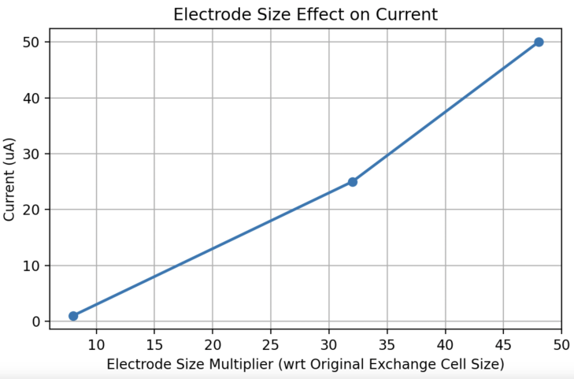
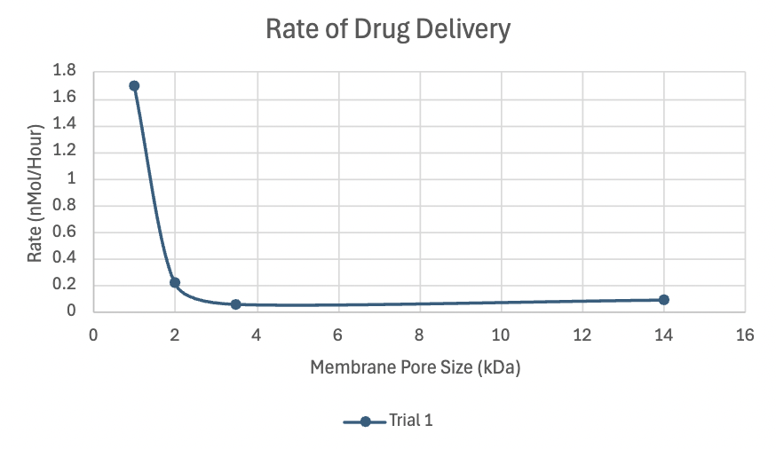

An implantable redox-flow iontophoresis device for crossing the blood–brain barrier
The electronics were never the bottleneck. Characterizing the device end to end showed the current limit lived in the fluidics, the electrode area, and the membrane — and fixing those bought roughly 15× more delivered current.
The problem
Glioblastoma is hard to treat partly because the blood–brain barrier keeps most chemotherapeutics out of the brain. Iontophoresis drives charged drug molecules across a barrier with an applied electric field instead of relying on diffusion, and a redox-flow version implanted in a cranial window can do this locally, at the tumor, without dosing the whole body.
The device as I found it was delivering current in the microamp range — too low to be therapeutically interesting. The open question was what was actually limiting it.

Finding the bottleneck
I characterized the device systematically — electrically and fluidically — rather than assuming the driving electronics were at fault. Sweeping each subsystem independently showed the electronics had plenty of headroom: the limits were the exchange cell geometry, the electrode area, and the membrane chemistry.


What I changed
- Fluidic path. Redesigned the exchange cell so the mediator actually sweeps the electrode surface rather than stagnating against it.
- Electrodes. Integrated substantially larger graphite electrodes, for about a 15× increase in delivered current relative to the starting device.
- Membranes. Screened cellulose membranes from 0.1 to 300 kDa, measuring both instantaneous current and integrated charge across variants, so the choice could be made on delivered dose rather than on peak current alone.
- Instrument control. Extended the lab's Python control scripts to drive pulsed redox-mediator flow, which eliminated electrochemical stagnation at the electrode surface during long runs.
Outcome
The redesigned device gave the group a platform with enough delivery current to be worth testing in vivo, and the characterization data fed into an abstract submitted to innoLAE 2027.